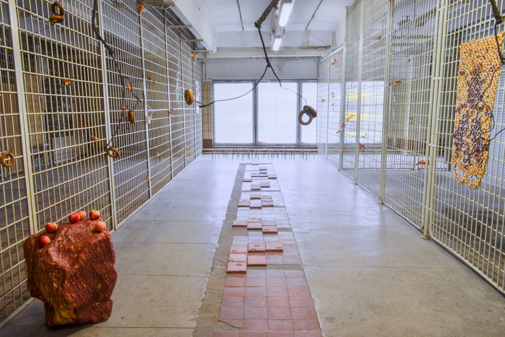

Harvest
Ellen Vene
05.09 - 04.10.2026

Harvest
Opening: 05.09.2026 13:00
“Love is like a butterfly, as soft and gentle as a sigh
The multicolored moods of love are like its satin wings
Love makes your heart feel strange inside, it flutters like soft wings in flight
Love is like a butterfly, a rare and gentle thing”"Love Is Like a Butterfly"
by Dolly Parton
Weekend mornings begin with a canvas bag and a quiet insistence on ripeness. It's eight in the morning and the mosquitoes are still asleep, as are most of the humans. But there are people preparing for the busy weekends, the sellers at the local farmer markets, they move through their stalls with a kind of practiced choreography, going through all the produce, checking which are good and which are beginning to rot. The market is a place where goods from many different places are brought together and put on display. Behind each item is a landscape we no longer see. Distance, time, and labour are condensed into a small space and turned into something that can be bought and sold.
In Harvest, Ellen Vene created a task where she could only work primarily with materials and objects already present in the studio: beeswax and candle wax from used candles given to her by her friends; unfired clay collected during her residency in Mexico; a couple bags of barankas, butterfly decorations and plastic branches. These materials and objects were transformed into an installation that revalues what already exists in her small thoughts and unfinished experiments accumulated over the year. The exhibition allows them to appear in altered forms that resemble a flâneur strolling through the local market, pondering what can be made from what has already been gathered, used, or abandoned. Vene's process focuses on materials and thoughts that are overlooked or left aside, allowing freedom and chances to take over the arrangements as meaning. The studio thus becomes a kind of interior market stall where things are revalued and given a new life. This attention shows how Vene harvests meanings through collections of fragments of thoughts, leftovers and residue. They are strong, fragile and soft as a sigh, each holding its own weight.
Ellen Vene is a Tallinn-based visual artist whose practice moves across sculpture, installation and new media. Her site-sensitive works are driven by an interest in the ways materials themselves can carry stories. She often works with non-traditional materials and found objects, allowing their inherent logic to shape the work. Her practice engages with cultural histories and environmental processes, examining how inherited narratives and systems of production continue to shape the present.
Vene holds an MA in Contemporary Art from the Estonian Academy of Arts (2021) and a BA in Sculpture and Installation from the Estonian Academy of Arts (2017). She has also studied art history at the University of Applied Arts Vienna Die Angewandte and, during an exchange year at Diego Portales University in Santiago, Chile, studied social sciences and history.